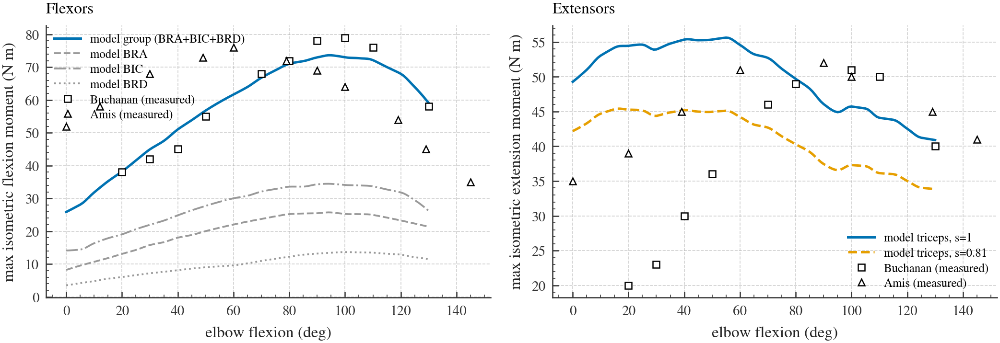

Why four branches?
At equilibrium, excitation equals activation and fibre velocity is zero. Those are precisely the switching surfaces for asymmetric activation dynamics and the force–velocity relation. Their two independent switches yield four directional Jacobians. The derivation checks the continuity conditions for piecewise-linear systems and gives closed-form slope ratios.

Prediction and control
At the representative posture, using the wrong branch produces errors of 14–75% of the small activating-step response. In the reported closed-loop comparison, a blended linearization overshoots a raising step eight to nine times as much as the naive, sign-test and relinearizing rules. Relinearizing at the measured state reduces lowering-step overshoot from 0.37° to 0.02°.
Beyond one operating point
The analysis extends to multiple flexors, parameter sets and an elastic tendon. Antagonist co-contraction can shrink the force–velocity kink toward cancellation. Delay experiments motivate a predictor that accounts for queued inputs; controller weighting and measurement noise affect which rule performs best.
Scope
The work combines a mathematical derivation with simulation and checks against published strength data. The relinearizing controller has not been validated on hardware. The reported overshoot ratios refer to the raising step under the study’s baseline settings, not every motion or tuning.